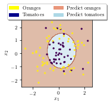
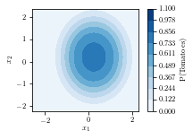

import numpy as np
import matplotlib.pyplot as plt
%matplotlib inline
from latexify import *
from sklearn.linear_model import LogisticRegression
import matplotlib.patches as mpatches# Choose some points betweennp.random.seed(0)
x1 = np.random.randn(1, 100)
x2 = np.random.randn(1, 100)y = x1**2 + x2**2x1array([[ 1.76405235, 0.40015721, 0.97873798, 2.2408932 , 1.86755799,
-0.97727788, 0.95008842, -0.15135721, -0.10321885, 0.4105985 ,
0.14404357, 1.45427351, 0.76103773, 0.12167502, 0.44386323,
0.33367433, 1.49407907, -0.20515826, 0.3130677 , -0.85409574,
-2.55298982, 0.6536186 , 0.8644362 , -0.74216502, 2.26975462,
-1.45436567, 0.04575852, -0.18718385, 1.53277921, 1.46935877,
0.15494743, 0.37816252, -0.88778575, -1.98079647, -0.34791215,
0.15634897, 1.23029068, 1.20237985, -0.38732682, -0.30230275,
-1.04855297, -1.42001794, -1.70627019, 1.9507754 , -0.50965218,
-0.4380743 , -1.25279536, 0.77749036, -1.61389785, -0.21274028,
-0.89546656, 0.3869025 , -0.51080514, -1.18063218, -0.02818223,
0.42833187, 0.06651722, 0.3024719 , -0.63432209, -0.36274117,
-0.67246045, -0.35955316, -0.81314628, -1.7262826 , 0.17742614,
-0.40178094, -1.63019835, 0.46278226, -0.90729836, 0.0519454 ,
0.72909056, 0.12898291, 1.13940068, -1.23482582, 0.40234164,
-0.68481009, -0.87079715, -0.57884966, -0.31155253, 0.05616534,
-1.16514984, 0.90082649, 0.46566244, -1.53624369, 1.48825219,
1.89588918, 1.17877957, -0.17992484, -1.07075262, 1.05445173,
-0.40317695, 1.22244507, 0.20827498, 0.97663904, 0.3563664 ,
0.70657317, 0.01050002, 1.78587049, 0.12691209, 0.40198936]])y[y>1] = 1
y[y<1] = 0
c = 0
for i in range(100):
if y[0, i] == 1:
y[0, i] = 0
c += 1
if c == 10:
breaklatexify()
plt.scatter(x1, x2, c=y,s=5)
yellow_patch = mpatches.Patch(color='yellow', label='Oranges')
blue_patch = mpatches.Patch(color='darkblue', label='Tomatoes')
plt.legend(handles=[yellow_patch, blue_patch])
plt.xlabel(r"$x_1$")
plt.ylabel(r"$x_2$")
plt.gca().set_aspect('equal')
format_axes(plt.gca())
plt.savefig("logisitic-circular-data.pdf", bbox_inches="tight", transparent=True)
np.vstack((x1, x2)).shape(2, 100)clf_1 = LogisticRegression(penalty='none',solver='newton-cg')
clf_1.fit(np.vstack((x1, x2)).T, y.T)/Users/nipun/anaconda3/lib/python3.7/site-packages/sklearn/utils/validation.py:724: DataConversionWarning: A column-vector y was passed when a 1d array was expected. Please change the shape of y to (n_samples, ), for example using ravel().
y = column_or_1d(y, warn=True)LogisticRegression(C=1.0, class_weight=None, dual=False, fit_intercept=True,
intercept_scaling=1, l1_ratio=None, max_iter=100,
multi_class='warn', n_jobs=None, penalty='none',
random_state=None, solver='newton-cg', tol=0.0001, verbose=0,
warm_start=False)# create a mesh to plot in
x_min, x_max = X[:, 0].min() - 0.3, X[:, 0].max() + 0.3
y_min, y_max = X[:, 1].min() - 0.3, X[:, 1].max() + 0.3
h = 0.02
xx, yy = np.meshgrid(np.arange(x_min, x_max, h),
np.arange(y_min, y_max, h))
Z = clf_1.predict(np.c_[xx.ravel(), yy.ravel()])
# Put the result into a color plot
Z = Z.reshape(xx.shape)
latexify()
yellow_patch = mpatches.Patch(color='yellow', label='Oranges')
blue_patch = mpatches.Patch(color='darkblue', label='Tomatoes')
pink_patch = mpatches.Patch(color='darksalmon', label='Predict oranges')
lblue_patch = mpatches.Patch(color='lightblue', label='Predict tomatoes')
plt.legend(handles=[yellow_patch, blue_patch, pink_patch, lblue_patch], loc='upper center',
bbox_to_anchor=(0.5, 1.25),
ncol=2, fancybox=True, shadow=True)
plt.contourf(xx, yy, Z, cmap=plt.cm.Paired, alpha=0.4)
plt.gca().set_aspect('equal')
plt.scatter(x1, x2, c=y,s=5)
plt.xlabel(r"$x_1$")
plt.ylabel(r"$x_2$")
plt.gca().set_aspect('equal')
plt.savefig("logisitic-linear-prediction.pdf", bbox_inches="tight", transparent=True)
new_x = np.zeros((4, 100))new_x[0] = x1
new_x[1] = x2
new_x[2] = x1**2
new_x[3] = x2**2clf = LogisticRegression(penalty='none',solver='newton-cg')clf.fit(new_x.T, y.T)/Users/nipun/anaconda3/lib/python3.7/site-packages/sklearn/utils/validation.py:724: DataConversionWarning: A column-vector y was passed when a 1d array was expected. Please change the shape of y to (n_samples, ), for example using ravel().
y = column_or_1d(y, warn=True)LogisticRegression(C=1.0, class_weight=None, dual=False, fit_intercept=True,
intercept_scaling=1, l1_ratio=None, max_iter=100,
multi_class='warn', n_jobs=None, penalty='none',
random_state=None, solver='newton-cg', tol=0.0001, verbose=0,
warm_start=False)clf.coef_array([[-0.50464855, -0.30337009, 1.08937351, 0.73697949]])new_x.T[:, 0]array([ 1.76405235, 0.40015721, 0.97873798, 2.2408932 , 1.86755799,
-0.97727788, 0.95008842, -0.15135721, -0.10321885, 0.4105985 ,
0.14404357, 1.45427351, 0.76103773, 0.12167502, 0.44386323,
0.33367433, 1.49407907, -0.20515826, 0.3130677 , -0.85409574,
-2.55298982, 0.6536186 , 0.8644362 , -0.74216502, 2.26975462,
-1.45436567, 0.04575852, -0.18718385, 1.53277921, 1.46935877,
0.15494743, 0.37816252, -0.88778575, -1.98079647, -0.34791215,
0.15634897, 1.23029068, 1.20237985, -0.38732682, -0.30230275,
-1.04855297, -1.42001794, -1.70627019, 1.9507754 , -0.50965218,
-0.4380743 , -1.25279536, 0.77749036, -1.61389785, -0.21274028,
-0.89546656, 0.3869025 , -0.51080514, -1.18063218, -0.02818223,
0.42833187, 0.06651722, 0.3024719 , -0.63432209, -0.36274117,
-0.67246045, -0.35955316, -0.81314628, -1.7262826 , 0.17742614,
-0.40178094, -1.63019835, 0.46278226, -0.90729836, 0.0519454 ,
0.72909056, 0.12898291, 1.13940068, -1.23482582, 0.40234164,
-0.68481009, -0.87079715, -0.57884966, -0.31155253, 0.05616534,
-1.16514984, 0.90082649, 0.46566244, -1.53624369, 1.48825219,
1.89588918, 1.17877957, -0.17992484, -1.07075262, 1.05445173,
-0.40317695, 1.22244507, 0.20827498, 0.97663904, 0.3563664 ,
0.70657317, 0.01050002, 1.78587049, 0.12691209, 0.40198936])X = np.vstack((x1, x2)).T
X.shape(100, 2)# create a mesh to plot in
x_min, x_max = X[:, 0].min() - 0.3, X[:, 0].max() + 0.3
y_min, y_max = X[:, 1].min() - 0.3, X[:, 1].max() + 0.3
h = 0.02
xx, yy = np.meshgrid(np.arange(x_min, x_max, h),
np.arange(y_min, y_max, h))
Z = clf.predict(np.c_[xx.ravel(), yy.ravel(), np.square(xx.ravel()), np.square(yy.ravel())])
# Put the result into a color plot
Z = Z.reshape(xx.shape)
latexify()
yellow_patch = mpatches.Patch(color='yellow', label='Oranges')
blue_patch = mpatches.Patch(color='darkblue', label='Tomatoes')
pink_patch = mpatches.Patch(color='darksalmon', label='Predict oranges')
lblue_patch = mpatches.Patch(color='lightblue', label='Predict tomatoes')
plt.legend(handles=[yellow_patch, blue_patch, pink_patch, lblue_patch], loc='upper center',
bbox_to_anchor=(0.5, 1.25),
ncol=2, fancybox=True, shadow=True)
plt.contourf(xx, yy, Z, cmap=plt.cm.Paired, alpha=0.4)
plt.gca().set_aspect('equal')
plt.scatter(x1, x2, c=y,s=5)
plt.xlabel(r"$x_1$")
plt.ylabel(r"$x_2$")
plt.gca().set_aspect('equal')
plt.savefig("logisitic-circular-prediction.pdf", bbox_inches="tight", transparent=True)
Z.shape(261, 272)np.c_[xx.ravel(), yy.ravel(), np.square(xx.ravel()), np.square(yy.ravel())]array([[-2.85298982, -2.52340315, 8.13955089, 6.36756347],
[-2.83298982, -2.52340315, 8.0258313 , 6.36756347],
[-2.81298982, -2.52340315, 7.9129117 , 6.36756347],
...,
[ 2.52701018, 2.67659685, 6.38578047, 7.16417069],
[ 2.54701018, 2.67659685, 6.48726088, 7.16417069],
[ 2.56701018, 2.67659685, 6.58954129, 7.16417069]])xx.ravel()array([-2.85298982, -2.83298982, -2.81298982, ..., 2.52701018,
2.54701018, 2.56701018])# create a mesh to plot in
x_min, x_max = X[:, 0].min() - h, X[:, 0].max() + h
y_min, y_max = X[:, 1].min() - h, X[:, 1].max() + h
h = 0.02
xx, yy = np.meshgrid(np.arange(x_min, x_max, h),
np.arange(y_min, y_max, h))
Z = clf.predict_proba(np.c_[xx.ravel(), yy.ravel(), np.square(xx.ravel()), np.square(yy.ravel())])
# Put the result into a color plot
Z = Z[:, 0].reshape(xx.shape)
latexify()
plt.contourf(xx, yy, Z,levels=np.linspace(0, 1.1, num=10),cmap='Blues')
plt.gca().set_aspect('equal')
#plt.scatter(x1, x2, c=y)
plt.xlabel(r"$x_1$")
plt.ylabel(r"$x_2$")
plt.colorbar(label='P(Tomatoes)')
plt.savefig("logisitic-circular-probability.pdf", bbox_inches="tight", transparent=True)
xx.shape(233, 244)Z.size56852np.linspace(0, 1.1, num=50)array([0. , 0.02244898, 0.04489796, 0.06734694, 0.08979592,
0.1122449 , 0.13469388, 0.15714286, 0.17959184, 0.20204082,
0.2244898 , 0.24693878, 0.26938776, 0.29183673, 0.31428571,
0.33673469, 0.35918367, 0.38163265, 0.40408163, 0.42653061,
0.44897959, 0.47142857, 0.49387755, 0.51632653, 0.53877551,
0.56122449, 0.58367347, 0.60612245, 0.62857143, 0.65102041,
0.67346939, 0.69591837, 0.71836735, 0.74081633, 0.76326531,
0.78571429, 0.80816327, 0.83061224, 0.85306122, 0.8755102 ,
0.89795918, 0.92040816, 0.94285714, 0.96530612, 0.9877551 ,
1.01020408, 1.03265306, 1.05510204, 1.07755102, 1.1 ])